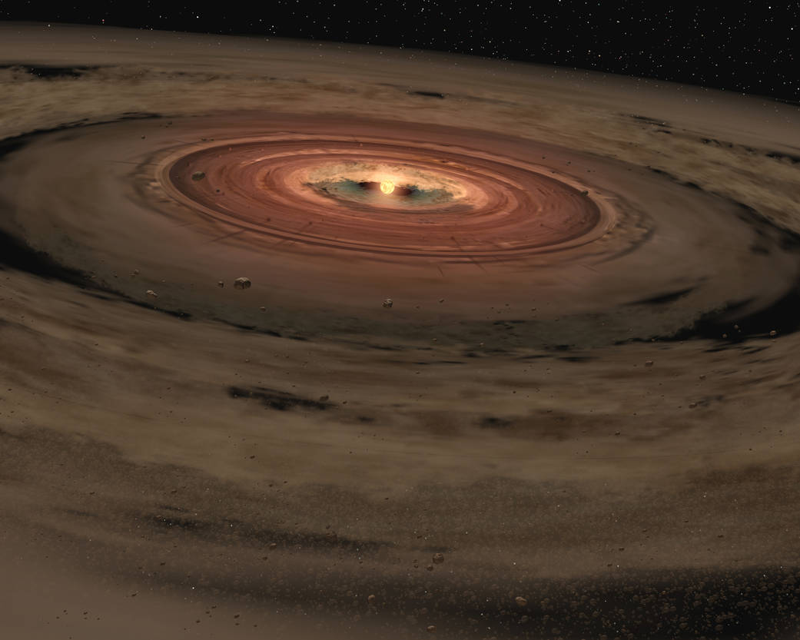
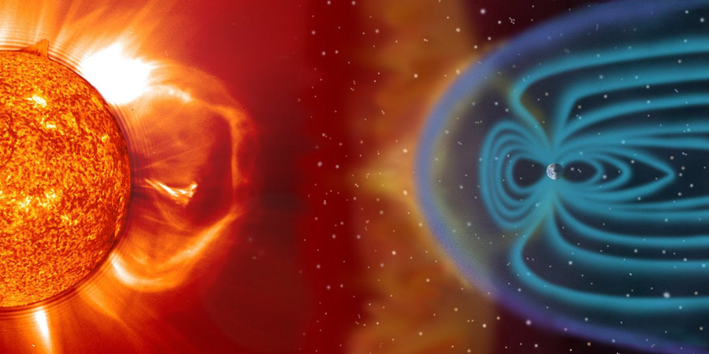

Le soleil, puis les planètes
Pendant 10 milliards d'années, le nuage de poussière va se rétracter sous sa propre gravité. Plus il se rétracte, plus son centre devient chaud : c'est ainsi qu'apparaît le soleil. Pendant ce temps, les éléments les plus lourds (le fer, le silicium, l'aluminium ou le nickel) vont s'agglomérer pour former de nouvelles planètes. Dès que les particules forment un disque de 800m de diamètre environ, la masse est suffisamment importante pour attirer la matière environnante. A ce stade, le système solaire compte encore 20 proto-planètes, dont notre future Terre.

Les planètes ne vont pas tarder à s'entrechoquer et à se combiner, si bien qu'après 30 millions d'années, il ne reste plus que les 9 planètes actuelles. Mais la Terre est loin de ressembler à celle d'aujourd'hui : il y fait plus de 5 000°C, trois fois plus que dans un incinérateur ! De plus, un nouveau danger menace notre planète : un vent solaire qui souffle à plus d'un million de km/h.
Le vent solaire, une terrible menace

Ce flux de plasma pourrait en théorie détruire notre atmosphère, comme sur Mars. Heureusement, le noyau terrestre génère un champ magnétique tout autour de la planète, qui empêche le passage des particules solaires, chargées électriquement. [En fait, 2 à 5 kg de l'atmosphère sont quand même entraînés par le vent solaire chaque seconde. Pas de quoi s'inquiéter pour autant : à ce rythme-là, on en a encore pour plusieurs milliards d'années.
Un choc effroyable
L'espace est décidément bien dangereux. Alors que la Terre vient juste de naître, elle va connaître une terrible collision. Une autre planète fonce sur elle à plus de 11 km/seconde. Le choc est d'une violence extraordinaire : le sol terrestre restera en fusion pendant plusieurs millions d'années. Mais il aura aussi des effets bénéfiques : la Lune est directement issue de cet impact, formée par un agrégat de roches et de débris. Elle est à cette époque 15 fois plus proche de chez nous, et apparaît énorme dans le ciel. La collision a aussi incliné la Terre sur son axe, créant par là même les saisons.
De l'eau venue de l'espace
50 millions d'années se sont écoulées depuis la naissance de la Terre. La température a un peu baissé (il y fait 1000°C environ), mais il n'y a pas d'eau. Et sans eau, pas de vie possible. On a longtemps cru que des comètes avaient apporté l'eau sur Terre. Mais après avoir capturé de la poussière de comète grâce à la sonde Stardust, on s'est aperçu que cette eau était différente de celle qu'on trouve sur Terre. Une nouvelle théorie suppose que ce sont des météorites, issues de la ceinture d'astéroïdes qui sont venues bombarder la planète et lui apporter son eau. Ces astéroides, situés a proximité de Jupiter, auraient subi l'influence de son énorme masse pour être déviées de leur orbite et arriver sur la Terre. Selon cette théorie, l'eau terrestre serait arrivée très rapidement : moins de 150 millions d'années après la naissance de celle-ci. 1,4 milliard de km³ d'eau en tout !
L'oxygène se fait attendre
Il fait à présent 90°C sur Terre, et il y a de l'eau mais toujours pas d'oxygène. Il faudra pour cela attendre plus d'un milliard d'années. Ce sont des stromatolithes, dont la partie vivante transforme le gaz carbonique en oxygène, qui vont se charger de ce travail. Mais au lieu de se répandre dans l'atmosphère, l'oxygène réagit d'abord avec le fer des océans et précipiter sous forme de rouille. Cette rouille va tomber au fond des océans pour devenir de la roche. Ces dernières ont ainsi accumulé plus de deux fois la quantité d'oxygène qui se trouve dans l'atmosphère ! Ce n'est qu'une fois que tout le fer a réagi que l'oxygène commence à gagner l'atmosphère. A partir de -2,5 milliards d'années et jusqu'à -500 millions d'années, la teneur en oxygène va lentement augmenter.
Il faudra attendre encore 250 millions d'années pour que les dinosaures posent une patte sur la Terre. Et il y a à peine 2 millions d'années, le premier homme arrivait enfin. Grâce à des coïncidences incroyables qui ont fait de la Terre ce havre de vie unique dans l'univers.
Céline Deluzarche, L'Internaute